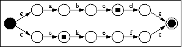

9 december 2013
De klasse Regexp in regexp.h
parset reguliere expressies. Er is gebruik
gemaakt van een zeer eenvoudige taal om reguliere expressis weer te
geven. Alle karakters staan voor zichzelf, behalve ronde haakjes, de
ofstreep | en de herhalingsoperator *, die aangeeft dat het voorgaande (een
gewoon karakter of een uitdrukking tussen haakjes) onbeperkt herhaald
mag worden. Concatenatie krijgen we door gewoon achter elkaar te
schrijven. Prioriteit van operatoren is ster, plus, of. Zo is aa*
hetzelfde als a(a)*, a|b* is a|(b)*, en ba|ok is (ba)|(ok);
Voor alle duidelijkheid heeft Regexp een uitschrijfoperatie
die met vierkante haakjes de volgorde van operaties aangeeft.
Probeer maar eens met regexp.cpp. De
foutdetectie van Regexp is vrij beperkt.
Schrijf je eigen versie van grep, mijngrep, die gebruik maakt
van regexps van bovenstaande vorm. Dit programma wordt opgeroepen met de
opdracht
grep <regexp> <bestandsnaam>
en schrijft dan alle regels van het bestand uit waarin een deelstring zit die overeenkomt
met de opgegeven regexp uit.
Een automaat kijkt of een bepaalde string behoort tot de taal gedefinieerd door de
bijbehorende regexp. Om te zien of een gegeven string een deel bevat dat voldoet
aan de regexp (en grep doet dit met elke lijn uit een bestand) moeten we twee dingen
doen:
- We moeten nagaan of de automaat zijn eindtoestand heeft bereikt op elke plaats van
de string (want de deelstring die overeenkomt met de regexp kan daar eindigen).
- We moeten de automaat herstarten op elke plaats van de string, want de gezochte
deelstring kan daar beginnen.
Het eerste kan zonder probleem gebeuren bij zowel een NA als bij een DA.
Het tweede is veel gemakkelijker met een NA.
Immers, met een deterministische automaat moet je voor elke
plaats in de hooiberg opnieuw beginnen om te zien of er daar geen
string begint die voldoet aan de regexp. Met een NA kan je alles
tesamen doen door op elke plaats in de string de begintoestand van de NA terug toe te
voegen aan de toestandsverzameling van de NA (en dat is doodsimpel: leg gewoon een
epsilonverbinding van elke toestand van de NA naar de begintoestand).
Nemen we bijvoorbeeld de regexp abcd|ckef. Als we al
...abc hebben ingelezen, dan kan het zijn dat we al drie letters van
abcd hebben, maar ook dat we één letter van ckef hebben.
De NA ziet er dan uit zoals in de tekening.

Tips:
- Als je in de code van Regexp kijkt dan zie je dat een Regexp recursief
is opgebouwd: een Regexp is een operator met nul (letter) één (ster)
of twee (en en of) argumenten, waarin de argumenten Regexps zijn. Dit kan helpen
bij het opbouwen van de automaat.
- In principe kan je een automaat voorstellen als een graaf, en dus lijkt overerving
van een of ander graaftype logisch. Is dit wel zo? Er zijn twee soorten bewerking
waarvoor de voorstelling van een automaat geschikt moet zijn:
- De opbouw van de automaat uitgaande van een Regexp.
- Het gebruik van de automaat om strings te herkennen.
Is de voorstelling van de structuur in de Graafklassen geschikt voor beide bewerkingen?
Is het een goed idee om voor beide functies dezelfde voorstelling te gebruiken?
Bijkomende opgave:
Natuurlijk is een DA meestal efficiënter dan een NA, maar bij een NA kan je elke
plaats in de string als startplaats beschouwen om een overeenkomende deelstring te vinden
op de manier zoals hiervoor beschreven. Wil je zowel
de efficiëntie van de DA als de uniforme benadering van de NA,
dan kan je een DA maken en die beschouwen als een NA, waardoor je op elk ogenblik een
begintoestand kan toevoegen, en dan het resultaat terug
omzetten naar een DA.